1. Электрическая цепь
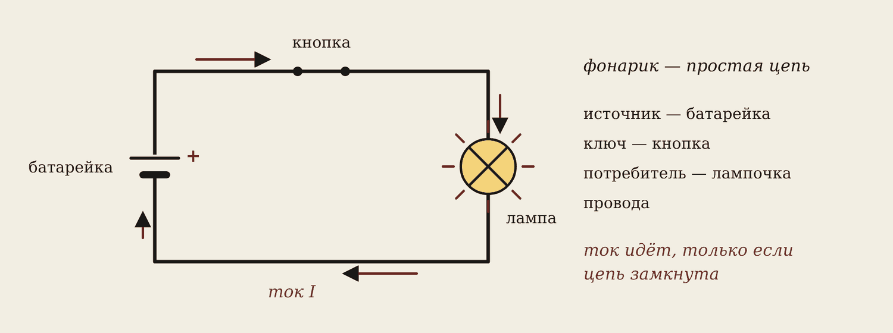
Электрическая цепь — это источник, потребитель и провода. Часто в ней есть ещё выключатель (ключ), защита и измерительные приборы.
Самая простая цепь — фонарик: батарейка даёт энергию, лампа её тратит, кнопка замыкает и размыкает цепь.
Запомните
Ток идёт, только если цепь замкнута. Разомкнули ключ — тока нет во всей цепи.
На сварочном посту то же самое: источник — сварочный аппарат, потребитель — дуга, провода — сварочные кабели.
2. Условные обозначения
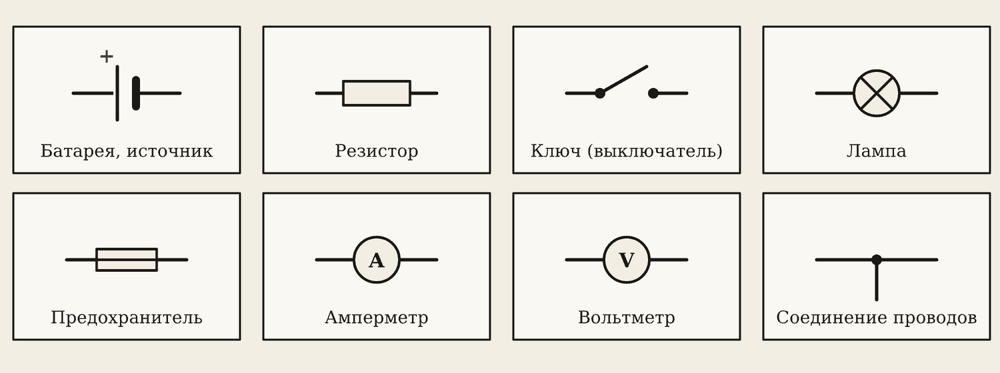
На схемах не рисуют настоящие приборы — их заменяют условными знаками:
- батарея — длинная черта (плюс) и короткая (минус);
- резистор — прямоугольник;
- лампа — круг с крестом;
- амперметр и вольтметр — круг с буквой A или V;
- точка на пересечении проводов — провода соединены.
3. Ток, напряжение, сопротивление
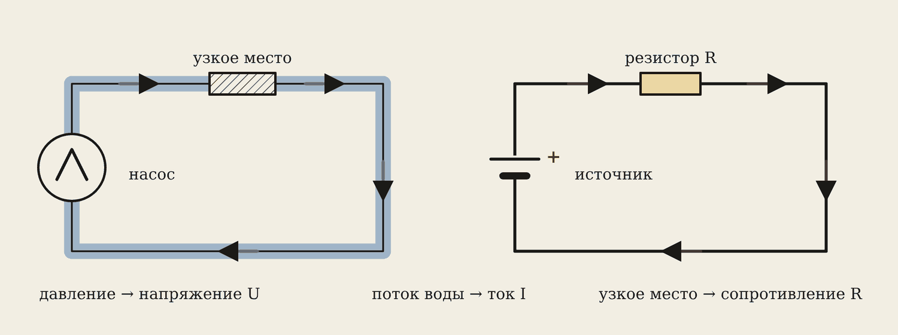
Электричество удобно сравнивать с водой в трубах.
| Вода | Электричество | Единица |
|---|---|---|
| давление насоса | напряжение U | вольт, В |
| поток воды | ток I | ампер, А |
| узкое место | сопротивление R | ом, Ом |
Ток — направленное движение заряженных частиц, в проводах — электронов. Сила тока — сколько заряда проходит за секунду: I = q / t.
Примеры: розетка — 220 В, аккумулятор машины — 12 В, батарейка — 1,5 В; сварочный ток — 100–250 А.
4. Как измерить ток и напряжение
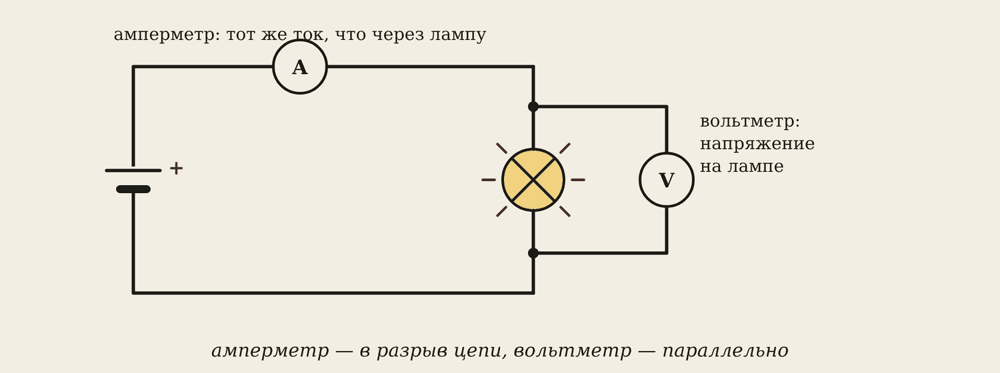
- Амперметр включают в разрыв цепи (последовательно): через него идёт тот же ток.
- Вольтметр подключают параллельно — к двум точкам, между которыми меряют напряжение.
Осторожно
Амперметр, подключённый прямо к батарейке или розетке, — это короткое замыкание. Прибор сгорит, провода могут загореться.
5. Сопротивление провода

R = ρ · l / S
- ρ — удельное сопротивление: медь 0,0175, алюминий 0,028 Ом·мм²/м;
- l — длина в метрах, S — сечение в мм².
Длинный и тонкий провод мешает току сильнее. При нагреве сопротивление металла растёт — поэтому лампа накаливания чаще перегорает в момент включения.
6. Закон Ома
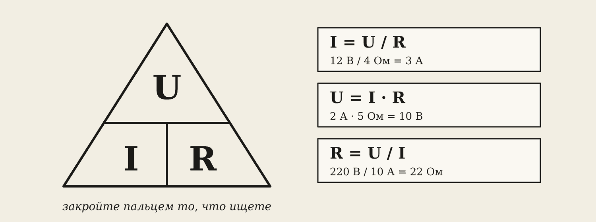
I = U / R
Больше напряжение — больше ток. Больше сопротивление — меньше ток. Закройте в треугольнике пальцем то, что ищете:
U = 12 В, R = 4 Ом → I = 12 / 4 = 3 А. I = 2 А, R = 5 Ом → U = 2 · 5 = 10 В. U = 220 В, I = 10 А → R = 220 / 10 = 22 Ом.
7. ЭДС и внутреннее сопротивление
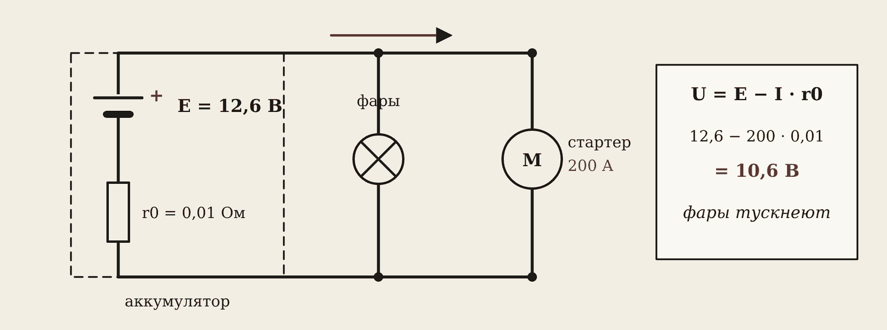
ЭДС E — напряжение источника без нагрузки. Внутри любого источника есть своё сопротивление r0. Закон Ома для полной цепи:
I = E / (R + r0) U = E − I · r0
При пуске стартера ток около 200 А. Внутри аккумулятора теряется 200 · 0,01 = 2 В. На фары остаётся 12,6 − 2 = 10,6 В — фары тускнеют.
8. Мощность, энергия и нагрев
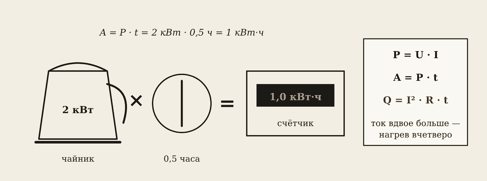
P = U · I A = P · t Q = I² · R · t
- Мощность P — в ваттах: чайник 2000 Вт, светодиодная лампа 10 Вт.
- Энергия A — счётчик считает в кВт·ч: чайник 2 кВт за полчаса = 1 кВт·ч.
- Закон Джоуля–Ленца: ток нагревает проводник. Ток вырос в 2 раза — тепла в 4 раза больше.
На этом законе работают чайник, утюг, обогреватель и контактная (точечная) сварка. Из-за него же греется тонкий сварочный кабель.
9. Последовательное соединение
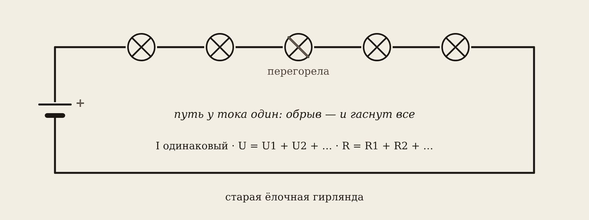
Резисторы идут один за другим, «в линию». Путь у тока один.
- Ток везде одинаковый.
- Напряжения складываются: U = U1 + U2 + U3.
- Сопротивления складываются: R = R1 + R2 + R3.
10, 20 и 30 Ом последовательно при 12 В: R = 60 Ом, I = 0,2 А, напряжения 2, 4 и 6 В — в сумме 12 В.
10. Параллельное соединение
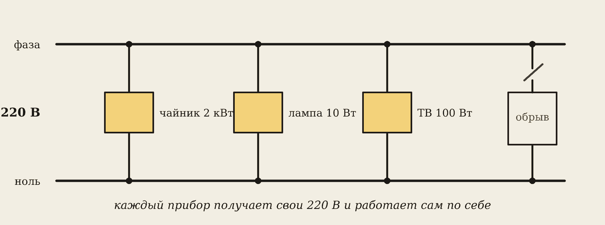
Приборы подключены к одним и тем же двум точкам. Так включены все розетки в квартире.
- Напряжение на всех ветвях одинаковое.
- Токи складываются: I = I1 + I2 + I3.
- Общее сопротивление меньше самого маленького. Для двух: R = R1 · R2 / (R1 + R2).
20 и 30 Ом параллельно: R = 600 / 50 = 12 Ом — меньше 20, всё верно.
11. Законы Кирхгофа
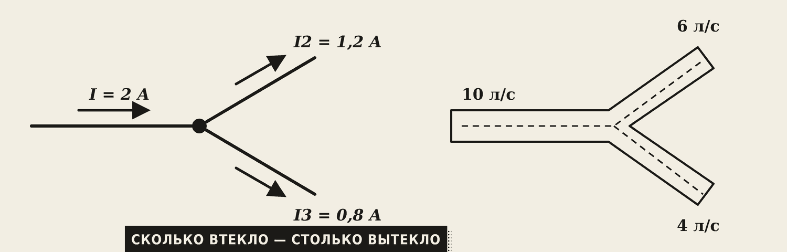
Первый закон — для узла: сколько тока втекло, столько и вытекло. Втекает 5 А, в одну ветку уходит 3 А — в другую 2 А.
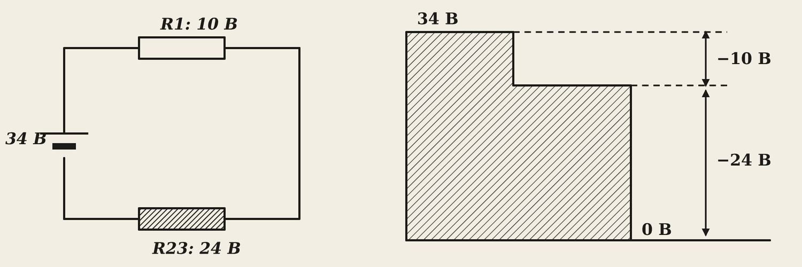
Второй закон — для контура: сумма ЭДС равна сумме напряжений на резисторах. Батарея 12 В и две одинаковые лампы последовательно — по 6 В на каждой.
12. Режимы работы цепи
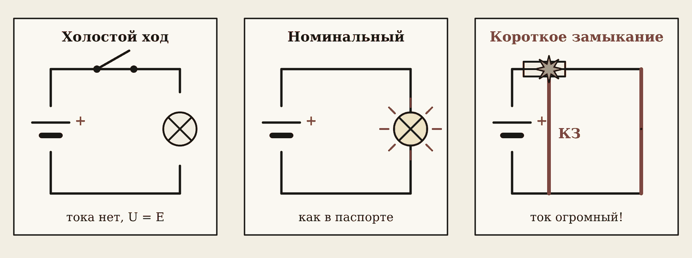
| Режим | Что происходит | Пример |
|---|---|---|
| Холостой ход | цепь разомкнута, тока нет, U = E | зарядка в розетке без телефона |
| Номинальный | прибор работает как в паспорте | лампа 60 Вт при 220 В |
| Короткое замыкание | провода соединились напрямую, ток огромный | «выбило пробки» |
Осторожно
Короткое замыкание опасно: провода перегреваются, возможен пожар. Защищает автомат или предохранитель.
Коснулись электродом детали — это тоже короткое замыкание. Сварочный аппарат специально устроен так, чтобы его выдерживать.
Баланс мощностей: сколько мощности дал источник, столько забрали все потребители. Им проверяют расчёты.
Словарик
- Электрическая цепь — источник, потребитель и провода.
- Ток I — направленное движение заряженных частиц, в амперах.
- Напряжение U — то, что толкает заряды, в вольтах.
- Сопротивление R — насколько проводник мешает току, в омах.
- ЭДС E — напряжение источника без нагрузки.
- Мощность P — энергия за секунду, в ваттах.
- Узел — точка, где сходятся три провода и больше.
- Контур — замкнутый путь по цепи.
- Короткое замыкание — провода соединились напрямую, минуя нагрузку.
Эталоны в тетрадь
Перепишите в тетрадь по билетам — каждый эталон на отдельную страницу, с рисунком и строкой «Мой пример».
Ток и напряжение
Электрический ток, сила тока, напряжение: определения, обозначения, единицы. Условия существования тока.
- Электрический ток — направленное движение заряженных частиц (в проводах — электронов).
- Сила тока I — сколько заряда проходит за 1 секунду: I = q / t, в амперах [А].
- Напряжение U — то, что толкает заряды по проводу, в вольтах [В]. Как давление воды в трубе.
- Ток идёт, если есть источник и цепь замкнута.
- Примеры: розетка — 220 В, аккумулятор машины — 12 В, сварочный ток — 100–250 А.
Сопротивление проводника
Электрическое сопротивление проводника: от чего зависит. Почему сварочные кабели делают медными и большого сечения.
- Сопротивление R — насколько проводник мешает току, в омах [Ом].
- R = ρ·l / S: сопротивление больше у длинного и тонкого провода. Медь проводит лучше алюминия.
- При нагреве сопротивление металла растёт. Поэтому лампа накаливания чаще перегорает в момент включения: холодная нить пропускает большой ток.
- В сварке: кабель делают медным и толстым, чтобы он не грелся и не «съедал» напряжение.
Закон Ома, ЭДС
Закон Ома для участка цепи и для полной цепи. ЭДС и внутреннее сопротивление источника.
- Закон Ома: I = U / R. Больше напряжение — больше ток; больше сопротивление — меньше ток.
- ЭДС E — напряжение, которое даёт источник без нагрузки, [В].
- Закон Ома для полной цепи: I = E / (R + r₀), r₀ — внутреннее сопротивление источника.
- Пример: при пуске стартера фары машины тускнеют: большой ток «сажает» напряжение на внутреннем сопротивлении аккумулятора: U = E – I·r₀.
Работа и мощность тока
Работа и мощность электрического тока. Закон Джоуля–Ленца. Единицы: Дж, Вт, кВт·ч.
- Мощность: P = U·I, в ваттах [Вт]. Чайник — 2000 Вт, светодиодная лампочка — 10 Вт.
- Работа (энергия): A = P·t, [Дж]. Счётчик считает в кВт·ч: чайник 2 кВт за полчаса = 1 кВт·ч.
- Закон Джоуля–Ленца: ток нагревает проводник: Q = I²·R·t.
- Примеры: чайник, утюг, обогреватель; в сварке — нагрев кабеля и контактная (точечная) сварка.
Последовательное соединение
Последовательное соединение резисторов: ток, напряжения, общее сопротивление. Пример.
- Резисторы идут один за другим, «в линию». (Нарисуйте схему.)
- Ток везде одинаковый. Напряжения складываются: U = U₁ + U₂.
- Общее сопротивление: R = R₁ + R₂ + R₃.
- Пример: старая ёлочная гирлянда — перегорела одна лампочка, и гаснут все.
Параллельное соединение
Параллельное соединение резисторов: токи, напряжение, общее сопротивление. Почему потребители в сети включают параллельно.
- Резисторы подключены «рядом», к одним и тем же точкам. (Нарисуйте схему.)
- Напряжение везде одинаковое. Токи складываются: I = I₁ + I₂.
- Общее сопротивление меньше самого маленького. Для двух: R = R₁·R₂ / (R₁ + R₂).
- Пример: все розетки в квартире. Каждый прибор получает свои 220 В и работает независимо от других.
Законы Кирхгофа
Первый и второй законы Кирхгофа. Пример для узла и контура.
- Первый закон: сколько тока втекло в узел, столько и вытекло (как вода в разветвлении труб). ΣI = 0.
- Пример: втекает 5 А, в одну ветку уходит 3 А → в другую 2 А. (Рисунок узла.)
- Второй закон: в замкнутом контуре сумма ЭДС равна сумме напряжений на резисторах: ΣE = ΣI·R.
- Пример: батарейка 12 В и две лампы последовательно → напряжения на лампах в сумме дают 12 В.
Режимы работы цепи
Режимы работы цепи: холостой ход, номинальный, короткое замыкание. Баланс мощностей.
- Холостой ход: цепь разомкнута, тока нет (зарядка в розетке без телефона).
- Номинальный режим: прибор работает так, как написано в паспорте.
- Короткое замыкание (КЗ): провода соединились напрямую, ток очень большой. Опасно: перегрев, пожар. Защита — автомат в щитке («выбило пробки»).
- Баланс мощностей: сколько мощности дал источник, столько забрали потребители: ΣE·I = ΣI²·R.
- В сварке: коснулись электродом детали — это КЗ. Сварочный аппарат устроен так, чтобы выдержать его.
Электрическая цепь и обозначения
Электрическая цепь: элементы и их условные графические обозначения.
- Электрическая цепь — источник + потребитель + провода. Часто ещё выключатель, защита и измерительные приборы.
- Пример: фонарик — батарейка, кнопка, лампочка и проводники.
- Нарисуйте обозначения: батарея (длинная и короткая черта), резистор (прямоугольник), ключ, лампа (круг с крестом), предохранитель, амперметр (круг с «А»), вольтметр (круг с «V»).
- Нарисуйте схему фонарика: батарея, ключ, лампа.
Проверь себя
Сначала ответьте сами — в тетради или вслух. Потом нажмите на вопрос, чтобы увидеть ответ.
1Из чего состоит любая электрическая цепь?
Источник, потребитель и провода (часто ещё ключ и защита).
2Как включают амперметр и вольтметр?
Амперметр — в разрыв цепи (последовательно), вольтметр — параллельно.
3U = 36 В, R = 12 Ом. Найдите ток.
I = 36 / 12 = 3 А.
4Почему фары тускнеют при пуске стартера?
Большой ток стартера «сажает» напряжение на внутреннем сопротивлении аккумулятора: U = E − I · r0.
5Обогреватель 1,5 кВт работал 4 часа. Сколько энергии?
1,5 · 4 = 6 кВт·ч.
65, 10 и 15 Ом последовательно. Общее сопротивление?
30 Ом.
7Два резистора по 10 Ом параллельно. Общее сопротивление?
10 · 10 / 20 = 5 Ом.
8В узел втекает 5 А, в одну ветку уходит 3 А. Сколько в другую?
2 А.
9Что такое короткое замыкание и чем оно опасно?
Провода соединились напрямую, ток огромный — перегрев и пожар.
Попробуйте в лаборатории
Откройте на телефоне или компьютере — ничего устанавливать не нужно.
Ответы к «Проверь себя»
- Источник, потребитель и провода (часто ещё ключ и защита).
- Амперметр — в разрыв цепи (последовательно), вольтметр — параллельно.
- I = 36 / 12 = 3 А.
- Большой ток стартера «сажает» напряжение на внутреннем сопротивлении аккумулятора: U = E − I · r0.
- 1,5 · 4 = 6 кВт·ч.
- 30 Ом.
- 10 · 10 / 20 = 5 Ом.
- 2 А.
- Провода соединились напрямую, ток огромный — перегрев и пожар.